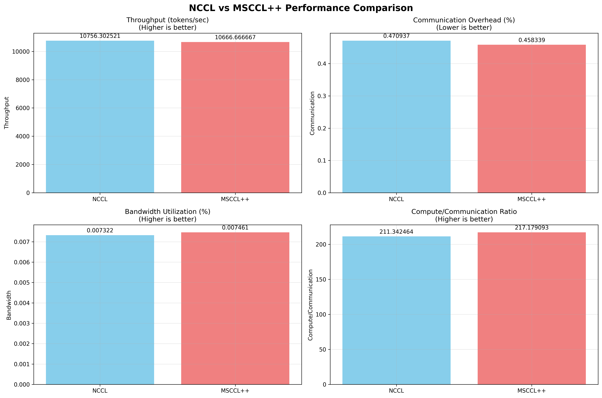

Generated On: 2026-02-27 13:03:09
| Metric | NCCL | MSCCL++ | Improvement (%) |
|---|---|---|---|
| Throughput (tokens/sec) | 10756.302521 | 10666.666667 | -0.8% |
| Communication Overhead (%) | 0.470937 | 0.458339 | -2.7% |
| Bandwidth Utilization (%) | 0.007322 | 0.007461 | +1.9% |
| Compute/Communication Ratio | 211.342464 | 217.179093 | +2.8% |
